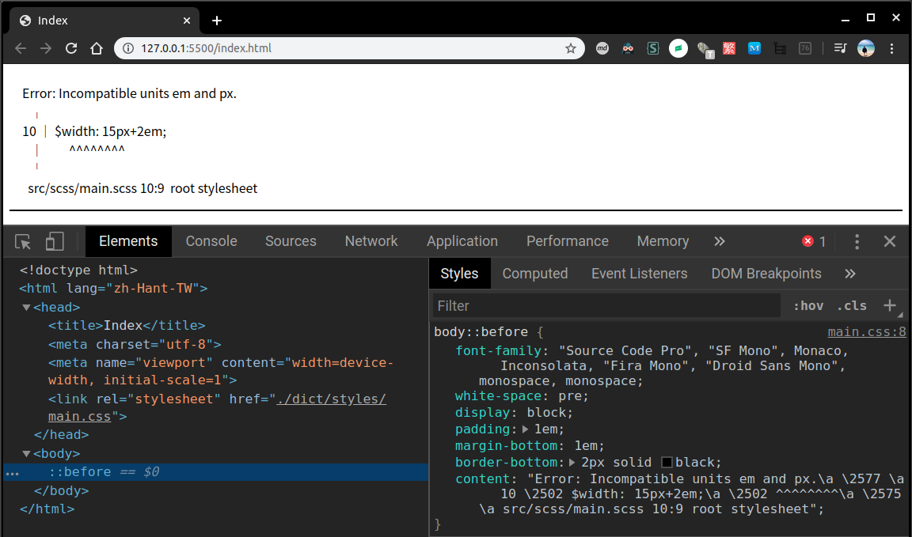

<!DOCTYPE html><html><head><meta charset="utf-8"><title>Dart Sass | Titangene Blog</title><meta http-equiv="X-UA-Compatible" content="IE=edge"><meta name="viewport" content="width=device-width,initial-scale=1,maximum-scale=1"><meta name="HandheldFriendly" content="True"><meta name="apple-mobile-web-app-capable" content="yes"><meta name="author" content="Titangene"><link rel="shortcut icon" href="/favicon.ico"><link rel="alternate" href="/atom.xml" title="Titangene Blog"><meta name="description" content="Dart Sass 是 Sass 的主要實作，過去常見的是 Ruby Sass，而現今 Sass 官方推薦大家改用 Dart Sass，尤其是用 JavaScript 或 Node.js 開發的相關專案。"><meta property="og:type" content="article"><meta property="og:title" content="Dart Sass"><meta property="og:url" content="https://titangene.github.io/article/dart-sass.html"><meta property="og:site_name" content="Titangene Blog"><meta property="og:description" content="Dart Sass 是 Sass 的主要實作，過去常見的是 Ruby Sass，而現今 Sass 官方推薦大家改用 Dart Sass，尤其是用 JavaScript 或 Node.js 開發的相關專案。"><meta property="og:locale" content="zh_TW"><meta property="og:image" content="https://titangene.github.io/images/cover/sass.jpg"><meta property="article:published_time" content="2020-05-03T15:54:55.000Z"><meta property="article:modified_time" content="2020-05-03T15:54:20.102Z"><meta property="article:author" content="Titangene"><meta property="article:tag" content="Dart"><meta property="article:tag" content="w3HexSchool"><meta property="article:tag" content="CLI"><meta property="article:tag" content="Sass"><meta property="article:tag" content="CSS"><meta name="twitter:card" content="summary_large_image"><meta name="twitter:image" content="https://titangene.github.io/images/cover/sass.jpg"><meta name="twitter:creator" content="@titangeneTW"><meta name="twitter:site" content="@titangene_blog"><meta property="fb:admins" content="100001106016019"><meta property="fb:app_id" content="2470546159839111"><meta property="og:image:width" content="1200"><meta property="og:image:height" content="630"><meta name="google-site-verification" content="AaJ39L7h-nWwJjXJMhAMtXSF6H6BUgGWXC80kYvLic8"><link rel="stylesheet" href="//fonts.googleapis.com/css?family=Inconsolata|Titillium+Web"><link href="https://fonts.googleapis.com/css?family=Source+Code+Pro&display=swap" rel="stylesheet"><link rel="stylesheet" href="//use.fontawesome.com/releases/v5.7.0/css/all.css" integrity="sha384-lZN37f5QGtY3VHgisS14W3ExzMWZxybE1SJSEsQp9S+oqd12jhcu+A56Ebc1zFSJ" crossorigin="anonymous"><link rel="stylesheet" href="https://unpkg.com/gitalk/dist/gitalk.css"><link rel="stylesheet" href="/style.css"><script async src="https://www.googletagmanager.com/gtag/js?id=UA-129758206-1"></script><script>!function(a){function n(){dataLayer.push(arguments)}a.dataLayer=a.dataLayer||[],n("js",new Date),n("config","UA-129758206-1")}(window)</script><script>function setLoadingBarProgress(e){document.getElementById("loading-bar").style.width=e+"%"}</script><meta name="generator" content="Hexo 4.2.0"><link rel="alternate" href="/atom.xml" title="Titangene Blog" type="application/atom+xml"></head></html><body><div id="loading-bar-wrapper"><div id="loading-bar"></div></div><script>setLoadingBarProgress(20)</script><header class="l_header"><div class="wrapper"><div class="nav-main container container--flex"><a class="logo flat-box" href="/">Titangene Blog</a><div class="menu"><ul class="h-list"><li><a class="flat-box nav-home" href="/">Home</a></li><li><a class="flat-box nav-archives" href="/archives">Archives</a></li></ul><div class="underline"></div></div><div class="m_search"><form name="searchform" class="form u-search-form"><input type="text" class="input u-search-input" placeholder="Search"> <i class="fas fa-search"></i></form></div><ul class="switcher h-list"><li class="s-search"><a class="fas fa-search" href="javascript:void(0)"></a></li><li class="s-menu"><a class="fas fa-bars" href="javascript:void(0)"></a></li></ul></div><div class="nav-sub container container--flex"><a class="logo flat-box" href="/">Titangene Blog</a><ul class="switcher h-list"><li class="s-comment"><a class="far fa-comment-alt" href="javascript:void(0)"></a></li><li class="s-top"><a class="fas fa-arrow-up" href="javascript:void(0)"></a></li><li class="s-toc"><a class="fas fa-list-ol" href="javascript:void(0)"></a></li></ul></div></div></header><aside class="menu-phone"><nav><a href="/" class="nav-home nav">Home </a><a href="/archives" class="nav-archives nav">Archives</a></nav></aside><script>setLoadingBarProgress(40)</script><div class="l_body"><div class="container clearfix"><div class="l_main"><article id="post-dart-sass" class="post white-box article-type-post" itemscope itemprop="blogPost"><section class="meta"><h2 class="title"><a href="/article/dart-sass.html">Dart Sass</a></h2><span class="post-time"><span class="post-meta-item-icon"><i class="fa fa-calendar"></i> </span><span class="post-meta-item-text">發表於</span> <time title="建立時間：2020-05-03 23:54:55" itemprop="dateCreated datePublished" datetime="2020-05-03T23:54:55+08:00">2020-05-03</time></span> <span class="comments-count"><span class="post-meta-divider">|</span> <span class="post-meta-item-icon"><i class="fas fa-comment"></i> </span><a href="https://titangene.github.io/article/dart-sass.html#comments" class="article-comment-count">留言</a></span><div class="post-category"><span class="post-meta-item-icon"><i class="fa fa-folder"></i> </span><span class="post-meta-item-text">分類於</span> <span itemprop="about" itemscope itemtype="http://schema.org/Thing"><a href="/categories/web-dev/" itemprop="url" rel="index"><span itemprop="name">Web Dev</span></a></span></div></section><section class="toc-wrapper"><h3>目錄</h3><ol class="toc"><li class="toc-item toc-level-1"><a class="toc-link" href="#安裝"><span class="toc-text">安裝</span></a><ol class="toc-child"><li class="toc-item toc-level-2"><a class="toc-link" href="#Standalone"><span class="toc-text">Standalone</span></a></li><li class="toc-item toc-level-2"><a class="toc-link" href="#npm"><span class="toc-text">npm</span></a></li></ol></li><li class="toc-item toc-level-1"><a class="toc-link" href="#為何用-Dart？-dart-sass-github-repo-dart-sass-dart-china"><span class="toc-text">為何用 Dart？ [^dart-sass_github-repo] [^dart-sass_dart-china]</span></a></li><li class="toc-item toc-level-1"><a class="toc-link" href="#Command-Line"><span class="toc-text">Command Line</span></a><ol class="toc-child"><li class="toc-item toc-level-2"><a class="toc-link" href="#One-to-One-Mode"><span class="toc-text">One-to-One Mode</span></a></li><li class="toc-item toc-level-2"><a class="toc-link" href="#Many-to-many-Mode"><span class="toc-text">Many-to-many Mode</span></a></li><li class="toc-item toc-level-2"><a class="toc-link" href="#CLI-option"><span class="toc-text">CLI option</span></a><ol class="toc-child"><li class="toc-item toc-level-3"><a class="toc-link" href="#indented"><span class="toc-text">--indented</span></a></li><li class="toc-item toc-level-3"><a class="toc-link" href="#load-path，-I"><span class="toc-text">--load-path，-I</span></a></li><li class="toc-item toc-level-3"><a class="toc-link" href="#style，-s"><span class="toc-text">--style，-s</span></a></li><li class="toc-item toc-level-3"><a class="toc-link" href="#error-css"><span class="toc-text">--error-css</span></a></li><li class="toc-item toc-level-3"><a class="toc-link" href="#update"><span class="toc-text">--update</span></a></li><li class="toc-item toc-level-3"><a class="toc-link" href="#watch"><span class="toc-text">--watch</span></a></li></ol></li><li class="toc-item toc-level-2"><a class="toc-link" href="#常用的-option"><span class="toc-text">常用的 option</span></a></li></ol></li></ol></section><section class="article typo"><div class="article-entry" itemprop="articleBody"><p></p><p><a href="https://github.com/sass/dart-sass" target="_blank" rel="noopener">Dart Sass</a> 是 Sass 的主要實作，過去常見的是 Ruby Sass，而現今 <a href="https://sass-lang.com/ruby-sass" target="_blank" rel="noopener">Sass 官方推薦大家改用 Dart Sass</a>，尤其是用 JavaScript 或 Node.js 開發的相關專案。</p><a id="more"></a><p>Dart Sass 是 Sass 的 Dart 實作，效能比 Ruby Sass 還要快，且易於安裝，還可編譯成純 JavaScript，讓我們可以輕鬆的整合至現有的 Web 開發工作流程中。</p><h1 id="安裝"><a class="header-anchor" href="#安裝"></a>安裝</h1><p>有多種安裝和執行 Dart Sass 的方法：</p><h2 id="Standalone"><a class="header-anchor" href="#Standalone"></a>Standalone</h2><p>從 <a href="https://github.com/sass/dart-sass/releases/" target="_blank" rel="noopener">GitHub Release 頁面</a>下載適用於你 OS 的 standalone Dart Sass archive，其中包含 Dart VM 和 executable 的 snapshot。</p><p>使用方法很簡單，下載後並解壓縮，將解壓縮後的目錄新增至 <code>PATH</code> (<a href="https://katiek2.github.io/path-doc/" target="_blank" rel="noopener">這篇</a> 提供各 OS 如何設定 <code>PATH</code> 的步驟)，接著重新啟動 terminal，然後就能執行 <code>sass</code> executable 開始使用！</p><h2 id="npm"><a class="header-anchor" href="#npm"></a>npm</h2><p>可透過 npm 安裝 <a href="https://www.npmjs.com/package/sass" target="_blank" rel="noopener">Dart Sass</a>，該套件是已編譯為 JavaScript，且沒有任何 native code 或外部依賴。提供 command-line <code>sass</code> executable 和 Node.js API。</p><p>全域安裝：</p><figure class="highlight shell"><table><tr><td class="gutter"><pre><span class="line">1</span><br></pre></td><td class="code"><pre><code class="hljs shell"><span class="hljs-meta">$</span><span class="bash"> npm install -g sass</span><br></code></pre></td></tr></table></figure><p>local 安裝：新增至專案</p><figure class="highlight shell"><table><tr><td class="gutter"><pre><span class="line">1</span><br></pre></td><td class="code"><pre><code class="hljs shell"><span class="hljs-meta">$</span><span class="bash"> npm install --save-dev sass</span><br></code></pre></td></tr></table></figure><div class="info"><p>其餘的安裝方式可參考 <a href="https://github.com/sass/dart-sass#using-dart-sass" target="_blank" rel="noopener">Dart Sass GitHub Repo 的 README 說明</a>。</p></div><h1 id="為何用-Dart？-dart-sass-github-repo-dart-sass-dart-china"><a class="header-anchor" href="#為何用-Dart？-dart-sass-github-repo-dart-sass-dart-china"></a>為何用 Dart？ [^dart-sass_github-repo] [^dart-sass_dart-china]</h1><p>在 <a href="https://github.com/sass/dart-sass#why-dart" target="_blank" rel="noopener">Dart Sass GitHub Repo</a> 的 README 有提到為何 Dart Sass 會取代 Ruby Sass，有以下幾個優點：</p><ul><li>效能快：比 Ruby 塊，且與 C++ 差不多</li><li>免安裝：<ul><li>Dart VM 沒有外部依賴，可將應用程式編譯成獨立的 snapshot 檔案，因此可將 Dart Sass 只需發佈三個檔案 (VM、snapshot 和 wrapper script)</li><li>可編譯成 JavaScript，所以可透過 npm 發佈</li></ul></li><li>容易寫：<ul><li>Dart 是比 C++ 更高級的語言，不需要太多的記憶體管理和建制系統的麻煩</li><li>Dart 是靜態型別 (statically typed)，與 Ruby 相比 可更容易的進行大型重構</li></ul></li><li>對貢獻者更友好：<ul><li>Dart 比 Ruby 更容易學習</li></ul></li></ul><h1 id="Command-Line"><a class="header-anchor" href="#Command-Line"></a>Command Line</h1><p>Dart Sass executable 有兩種使用模式：</p><ul><li>One-to-One Mode (一對一模式)</li><li>Many-to-many Mode (多對多模式)</li></ul><h2 id="One-to-One-Mode"><a class="header-anchor" href="#One-to-One-Mode"></a>One-to-One Mode</h2><figure class="highlight shell"><table><tr><td class="gutter"><pre><span class="line">1</span><br></pre></td><td class="code"><pre><code class="hljs shell"><span class="hljs-meta">$</span><span class="bash"> sass &lt;input.scss&gt; [output.css]</span><br></code></pre></td></tr></table></figure><ul><li>一個輸入檔 ( <code>input.scss</code> ) 編譯成一個輸出檔 ( <code>output.scss</code> )</li><li>若為提供輸出路徑，會將已編譯的 CSS 列印至 terminal 上</li><li>若輸入檔的副檔名是：<ul><li><code>.scss</code>：解析成 <a href="https://sass-lang.com/documentation/syntax#scss" target="_blank" rel="noopener">SCSS</a></li><li><code>.sass</code>：解析成 <a href="https://sass-lang.com/documentation/syntax#the-indented-syntax" target="_blank" rel="noopener">縮排語法 (indented syntax)</a></li><li><code>.css</code>：解析成 <a href="https://sass-lang.com/documentation/at-rules/import#importing-css" target="_blank" rel="noopener">純 CSS</a></li><li>若都不是以上三種，或來至標準輸入，預設會解析成 SCSS<ul><li>也可用 <code>--indented</code> flag 來控制輸出格式</li></ul></li></ul></li></ul><h2 id="Many-to-many-Mode"><a class="header-anchor" href="#Many-to-many-Mode"></a>Many-to-many Mode</h2><figure class="highlight shell"><table><tr><td class="gutter"><pre><span class="line">1</span><br></pre></td><td class="code"><pre><code class="hljs shell"><span class="hljs-meta">$</span><span class="bash"> sass [&lt;input.css&gt;:&lt;output.css&gt;] [&lt;input/&gt;:&lt;output/&gt;]...</span><br></code></pre></td></tr></table></figure><ul><li>一個或多個輸入檔編譯成一個或多個輸出檔</li><li>輸入和輸出用 <code>:</code> 字元來隔開</li><li>可將目錄中的所有 Sass 檔編譯為另一個目錄中具有相同名稱的 CSS 檔</li></ul><p>例如：</p><p>將 <code>style.scss</code> 編譯成 <code>style.css</code></p><figure class="highlight shell"><table><tr><td class="gutter"><pre><span class="line">1</span><br></pre></td><td class="code"><pre><code class="hljs shell"><span class="hljs-meta">$</span><span class="bash"> sass style.scss:style.css</span><br></code></pre></td></tr></table></figure><p>將 <code>light.scss</code> 和 <code>dark.scss</code> 編譯成 <code>light.css</code> 和 <code>dark.css</code>：</p><figure class="highlight shell"><table><tr><td class="gutter"><pre><span class="line">1</span><br></pre></td><td class="code"><pre><code class="hljs shell"><span class="hljs-meta">$</span><span class="bash"> sass light.scss:light.css dark.scss:dark.css</span><br></code></pre></td></tr></table></figure><p>將 <code>src/scss/</code> 目錄內的所有 Sass 檔編譯至 <code>public/css/</code> 目錄中，且會編譯成 CSS 檔：</p><figure class="highlight shell"><table><tr><td class="gutter"><pre><span class="line">1</span><br></pre></td><td class="code"><pre><code class="hljs shell"><span class="hljs-meta">$</span><span class="bash"> sass src/scss:public/css</span><br></code></pre></td></tr></table></figure><div class="info"><p>編譯整個目錄時，如果只想編譯出一個 CSS 檔案 (例如：<code>main.css</code> )，就要將主要檔案之外的其他檔案的名稱，改為以 <code>_</code> 為開頭的 (例如：<code>_color.scss</code>，這種檔案被稱為 <a href="https://sass-lang.com/documentation/at-rules/import#partials" target="_blank" rel="noopener">partial 檔案</a>)。</p></div><h2 id="CLI-option"><a class="header-anchor" href="#CLI-option"></a>CLI option</h2><h3 id="indented"><a class="header-anchor" href="#indented"></a><code>--indented</code></h3><p>指定輸入檔要解析成縮排語法 (indented syntax)</p><h3 id="load-path，-I"><a class="header-anchor" href="#load-path，-I"></a><code>--load-path</code>，<code>-I</code></h3><ul><li>新增額外的載入路徑來查找 stylesheet</li><li>此 option 可使用多次，代表提供多個載入路徑</li><li>最先載入的會優先於較晚載入的路徑</li></ul><p>例如：如果沒有使用 <code>--load-path</code> option，要 import Bootstrap 就必須使用很長的路徑：</p><figure class="highlight scss"><table><tr><td class="gutter"><pre><span class="line">1</span><br><span class="line">2</span><br><span class="line">3</span><br></pre></td><td class="code"><pre><code class="hljs scss"><span class="hljs-keyword">@import</span> <span class="hljs-string">"../node_modules/bootstrap/scss/functions"</span>;<br><span class="hljs-keyword">@import</span> <span class="hljs-string">"../node_modules/bootstrap/scss/variables"</span>;<br><span class="hljs-keyword">@import</span> <span class="hljs-string">"../node_modules/bootstrap/scss/mixins"</span>;<br></code></pre></td></tr></table></figure><p>若使用 <code>--load-path</code> option，就能簡短 import Bootstrap 的路徑：</p><figure class="highlight shell"><table><tr><td class="gutter"><pre><span class="line">1</span><br></pre></td><td class="code"><pre><code class="hljs shell"><span class="hljs-meta">$</span><span class="bash"> sass --load-path=node_modules src/main.scss dist/main.css</span><br></code></pre></td></tr></table></figure><figure class="highlight scss"><table><tr><td class="gutter"><pre><span class="line">1</span><br><span class="line">2</span><br><span class="line">3</span><br></pre></td><td class="code"><pre><code class="hljs scss"><span class="hljs-keyword">@import</span> <span class="hljs-string">"bootstrap/scss/functions"</span>;<br><span class="hljs-keyword">@import</span> <span class="hljs-string">"bootstrap/scss/variables"</span>;<br><span class="hljs-keyword">@import</span> <span class="hljs-string">"bootstrap/scss/mixins"</span>;<br></code></pre></td></tr></table></figure><h3 id="style，-s"><a class="header-anchor" href="#style，-s"></a><code>--style</code>，<code>-s</code></h3><p>指定 CSS 的輸出樣式。</p><p>Dart Sass 支援兩種輸出樣式：</p><ul><li><code>expanded</code>：預設，將每個選擇器和宣告寫在自己的那行上</li><li><code>compressed</code>：刪除盡可能多的多餘字元，並將整個 stylesheet 寫成一行</li></ul><figure class="highlight shell"><table><tr><td class="gutter"><pre><span class="line">1</span><br><span class="line">2</span><br><span class="line">3</span><br><span class="line">4</span><br><span class="line">5</span><br><span class="line">6</span><br><span class="line">7</span><br></pre></td><td class="code"><pre><code class="hljs shell"><span class="hljs-meta">$</span><span class="bash"> sass --style=expanded style.scss</span><br>h1 &#123;<br>  font-size: 40px;<br>&#125;<br><br><span class="hljs-meta">$</span><span class="bash"> sass --style=compressed style.scss</span><br>h1&#123;font-size:40px&#125;<br></code></pre></td></tr></table></figure><h3 id="error-css"><a class="header-anchor" href="#error-css"></a><code>--error-css</code></h3><ul><li>當編譯期間發生錯誤時，會告訴 Sass 是否 emit CSS 檔案</li><li>該 CSS 檔會在註解和 <code>body::before</code> 的 <code>content</code> property 中描述錯誤<ul><li>可在瀏覽器中察看錯誤訊息，而不會切回 terminal 察看</li></ul></li><li>預設若要編譯至少一個檔案 (不是標準輸出)，就會啟用 error CSS<ul><li>可在編譯成標準輸出時加上 <code>--error-css</code> 來啟用 error CSS</li><li>也可以加上 <code>--no-error-css</code> 來禁用 error CSS</li></ul></li><li>禁用 error CSS 後，<code>--update</code> flag 和 <code>--watch</code> flag 會在發生錯誤時刪除 CSS 檔案</li></ul><p>例如：以下 Sass 檔的內容是錯誤的：</p><figure class="highlight scss"><table><tr><td class="gutter"><pre><span class="line">1</span><br><span class="line">2</span><br></pre></td><td class="code"><pre><code class="hljs scss"><span class="hljs-comment">// main.scss</span><br><span class="hljs-variable">$width</span>: <span class="hljs-number">15px</span> + <span class="hljs-number">2em</span>;<br></code></pre></td></tr></table></figure><p>編譯此 Sass 檔會出下以錯誤：</p><figure class="highlight shell"><table><tr><td class="gutter"><pre><span class="line">1</span><br><span class="line">2</span><br><span class="line">3</span><br><span class="line">4</span><br><span class="line">5</span><br><span class="line">6</span><br><span class="line">7</span><br></pre></td><td class="code"><pre><code class="hljs shell"><span class="hljs-meta">$</span><span class="bash"> sass --error-css main.scss main.css</span><br>Error: Incompatible units em and px.<br>  ╷<br>1 │ $width: 15px + 2em;<br>  │         ^^^^^^^^^^<br>  ╵<br>  test.scss 1:9  root stylesheet<br></code></pre></td></tr></table></figure><p>而輸出的 <code>main.css</code> 檔會是以下內容：</p><figure class="highlight scss"><table><tr><td class="gutter"><pre><span class="line">1</span><br><span class="line">2</span><br><span class="line">3</span><br><span class="line">4</span><br><span class="line">5</span><br><span class="line">6</span><br><span class="line">7</span><br><span class="line">8</span><br><span class="line">9</span><br><span class="line">10</span><br><span class="line">11</span><br><span class="line">12</span><br><span class="line">13</span><br><span class="line">14</span><br><span class="line">15</span><br><span class="line">16</span><br><span class="line">17</span><br></pre></td><td class="code"><pre><code class="hljs scss"><span class="hljs-comment">/* Error: Incompatible units em and px.</span><br><span class="hljs-comment"> *   ,</span><br><span class="hljs-comment"> * 1 | $width: 15px + 2em;</span><br><span class="hljs-comment"> *   |         ^^^^^^^^^^</span><br><span class="hljs-comment"> *   '</span><br><span class="hljs-comment"> *   test.scss 1:9  root stylesheet */</span><br><br><span class="hljs-selector-tag">body</span><span class="hljs-selector-pseudo">::before</span> &#123;<br>  <span class="hljs-attribute">font-family</span>: <span class="hljs-string">"Source Code Pro"</span>, <span class="hljs-string">"SF Mono"</span>, Monaco, Inconsolata, <span class="hljs-string">"Fira Mono"</span>,<br>      <span class="hljs-string">"Droid Sans Mono"</span>, monospace, monospace;<br>  <span class="hljs-attribute">white-space</span>: pre;<br>  <span class="hljs-attribute">display</span>: block;<br>  <span class="hljs-attribute">padding</span>: <span class="hljs-number">1em</span>;<br>  <span class="hljs-attribute">margin-bottom</span>: <span class="hljs-number">1em</span>;<br>  <span class="hljs-attribute">border-bottom</span>: <span class="hljs-number">2px</span> solid black;<br>  <span class="hljs-attribute">content</span>: <span class="hljs-string">"Error: Incompatible units em and px.\a   \2577 \a 1 \2502  $width: 15px + 2em;\a   \2502          ^^^^^^^^^^\a   \2575 \a   test.scss 1:9  root stylesheet"</span>;         <br>&#125;<br></code></pre></td></tr></table></figure><p>若用瀏覽器察看使用此 <code>main.css</code> 檔的頁面會像下圖這樣：</p><p></p><h3 id="update"><a class="header-anchor" href="#update"></a><code>--update</code></h3><ul><li>當 stylesheets 的依賴更新時，Sass 就只會編譯 stylesheets</li><li>更新 stylesheets 時，會列印狀態訊息</li></ul><figure class="highlight shell"><table><tr><td class="gutter"><pre><span class="line">1</span><br><span class="line">2</span><br></pre></td><td class="code"><pre><code class="hljs shell"><span class="hljs-meta">$</span><span class="bash"> sass --update themes:public/css</span><br>Compiled themes/light.scss to public/css/light.css.<br></code></pre></td></tr></table></figure><h3 id="watch"><a class="header-anchor" href="#watch"></a><code>--watch</code></h3><p>類似 <code>--update</code>，但是在完成第一次編譯後，Sass 保持 open 狀態，並在 stylesheets 或其依賴發生更改時繼續編譯 stylesheets。</p><figure class="highlight shell"><table><tr><td class="gutter"><pre><span class="line">1</span><br><span class="line">2</span><br><span class="line">3</span><br><span class="line">4</span><br><span class="line">5</span><br></pre></td><td class="code"><pre><code class="hljs shell"><span class="hljs-meta">$</span><span class="bash"> sass --watch themes:public/css</span><br>Compiled themes/light.scss to public/css/light.css.<br><br><span class="hljs-meta">#</span><span class="bash"> Then when you edit themes/dark.scss...</span><br>Compiled themes/dark.scss to public/css/dark.css.<br></code></pre></td></tr></table></figure><h2 id="常用的-option"><a class="header-anchor" href="#常用的-option"></a>常用的 option</h2><p>開發用：</p><ul><li><code>--watch</code>：watch 模式</li><li><code>-I node_modules</code>：新增額外載入的 <code>node_modules</code> 目錄</li></ul><figure class="highlight shell"><table><tr><td class="gutter"><pre><span class="line">1</span><br></pre></td><td class="code"><pre><code class="hljs shell"><span class="hljs-meta">$</span><span class="bash"> sass --watch -I node_modules src/scss:dict/styles</span><br></code></pre></td></tr></table></figure><p>部署用 (build)：</p><ul><li><code>-s compressed</code>：CSS Minifier</li></ul><figure class="highlight shell"><table><tr><td class="gutter"><pre><span class="line">1</span><br></pre></td><td class="code"><pre><code class="hljs shell"><span class="hljs-meta">$</span><span class="bash"> sass -s compressed src/scss:dict/styles</span><br></code></pre></td></tr></table></figure><p>資料來源：</p><ul><li><a href="https://github.com/sass/dart-sass#using-dart-sass" target="_blank" rel="noopener">sass/dart-sass: The reference implementation of Sass, written in Dart.</a></li><li><a href="https://sass-lang.com/ruby-sass" target="_blank" rel="noopener">Sass: Ruby Sass</a></li><li><a href="https://www.npmjs.com/package/sass" target="_blank" rel="noopener">sass - npm</a></li><li><a href="https://sass-lang.com/install" target="_blank" rel="noopener">Sass: Install Sass</a></li><li><a href="https://www.dart-china.org/t/topic/146" target="_blank" rel="noopener">CSS 預處理器 Sass 的預設實作將遷移到 Dart Sass - 分享 - Dart 中文社區</a></li><li><a href="https://sass-lang.com/documentation/cli/dart-sass" target="_blank" rel="noopener">Sass: Dart Sass Command-Line Interface</a></li></ul></div><div class="article-tags tags"><a href="/tags/dart/" title="Dart">Dart</a> <a href="/tags/w3hexschool/" title="w3HexSchool">w3HexSchool</a> <a href="/tags/cli/" title="CLI">CLI</a> <a href="/tags/sass/" title="Sass">Sass</a> <a href="/tags/css/" title="CSS">CSS</a></div></section><div class="article-share-links"><span>分享：</span> <a class="fab fa-facebook-f" title="Facebook" target="_blank" href="javascript:window.open('https://www.facebook.com/sharer.php?u=https%3A%2F%2Ftitangene.github.io%2Farticle%2Fdart-sass.html', 'Share on Facebook','width=600, height=600')"></a> <a class="fab fa-twitter" title="Twitter" target="_blank" href="javascript:window.open('https://twitter.com/share?url=https%3A%2F%2Ftitangene.github.io%2Farticle%2Fdart-sass.html&amp;text=Dart Sass&amp;hashtags=Dart,w3HexSchool,CLI,Sass,CSS&amp;via=titangene_blog', 'Share on Twitter','width=600, height=260')"></a> <a class="fab fa-linkedin-in" title="Linkedin" target="_blank" href="javascript:window.open('https://www.linkedin.com/shareArticle?mini=true&amp;url=https%3A%2F%2Ftitangene.github.io%2Farticle%2Fdart-sass.html&amp;title=Dart Sass', 'Share on Linkedin','width=600, height=600')"></a> <a class="fab fa-facebook-messenger" title="Facebook Messenger" target="_blank" href="javascript:window.open('http://www.facebook.com/dialog/send?app_id=2470546159839111&amp;link=https%3A%2F%2Ftitangene.github.io%2Farticle%2Fdart-sass.html&amp;display=popup&amp;redirect_uri=https%3A%2F%2Fwww.facebook.com%2Fdialog%2Freturn%2Fclose%23_%3D_', 'Send in Messenger','width=600, height=600')"></a> <a class="fab fa-telegram-plane" href="https://telegram.me/share/url?url=https%3A%2F%2Ftitangene.github.io%2Farticle%2Fdart-sass.html&text=Dart Sass" target="_blank"></a></div><nav id="article-nav"><a href="/article/npm-and-yarn-cheatsheet.html" id="article-nav-prev" class="article-nav-link-wrap" title="npm / Yarn 套件管理器指令比對 cheatsheet" rel="prev"><strong class="article-nav-caption">Prev</strong><p class="article-nav-title">npm / Yarn 套件管理器指令比對 cheatsheet</p><i class="fas fa-angle-left"></i></a></nav><section id="list_related_posts"><h2>相關文章</h2><ul class="related-posts"><li class="related-posts-item"><a class="related-posts-link" href="/article/npm-and-yarn-cheatsheet.html">npm / Yarn 套件管理器指令比對 cheatsheet</a><div class="related-posts-item-abstract">npm 或 Yarn 都是最常見的 Node.js 套件管理器。本篇紀錄兩個 CLI 對應的指令。建立新專案12$ npm init$ npm init -y12$ yarn init$ yarn init -y安裝專案</div></li><li class="related-posts-item"><a class="related-posts-link" href="/article/nvm.html">nvm：安裝、切換不同 Node.js 版本的管理器</a><div class="related-posts-item-abstract">nvm 是 Node.js 的版本管理器 (version manager)，可在同一台主機上安裝多個版本的 Node.js 環境，因為不同專案可能會使用不同的 Node.js 版本，那就需要透過一個版本管理器來切換不同</div></li><li class="related-posts-item"><a class="related-posts-link" href="/article/git-detached-head.html">淺入 Git：detached HEAD</a><div class="related-posts-item-abstract">在 Git 的世界中，想回到過去，也許你會用 git checkout 跳至某個過去的 commit，但 Git 會提醒你正在「detached HEAD」狀態。那 detached HEAD 是什麼？它能做什麼？要怎麼</div></li><li class="related-posts-item"><a class="related-posts-link" href="/article/git-tree-object.html">深入 Git：Git 物件儲存 - tree 物件</a><div class="related-posts-item-abstract">本篇將深入探討 Git 如何運作，Git 是如何建立和儲存 tree 物件。之前講到 blob 物件是由檔案內容來產生的，那 Git 是如何知道這些檔案內容是分別存在哪個目錄內的檔案名稱中？目錄名稱和檔案名稱就是由 tr</div></li><li class="related-posts-item"><a class="related-posts-link" href="/article/git-auto-crlf.html">處理 Git 斷行字元的問題</a><div class="related-posts-item-abstract">在使用 Git 的過程中，若在不同作業系統編輯同一個 repo 的檔案，可能就會發生斷行字元的問題。Git 在 config 提供了 core.autocrlf 選項並用 .gitAttributes 檔案來處理斷行字元</div></li><li class="related-posts-item"><a class="related-posts-link" href="/article/flutter-install-on-windows.html">Flutter 環境建置 (Windows)</a><div class="related-posts-item-abstract">最近剛接觸 Flutter，於是就把在 Windows 上建置環境的記錄寫成一篇筆記，裡面包括 Android Studio 和 VS Code 的開發流程。詳情可參考官方連結：Get Started: Install</div></li></ul></section><section class="comments" id="comments"><h2>討論區</h2><div id="gitalk-container"></div><div id="disqus_thread" style="margin-top:20px"><noscript>Please enable JavaScript to view the <a href="https://disqus.com/?ref_noscript" target="_blank" rel="noopener">comments powered by Disqus.</a></noscript></div></section></article><script>window.subData={title:"Dart Sass",tools:!0}</script></div><aside class="l_side"><section class="m_widget about"><div class="avatar-section"><style>.avatar-cover{background:url(/images/avatar_cover.jpg) 0 10%/cover no-repeat}</style><div class="avatar-cover"></div></div><div class="header">Titangene</div><div class="content"><div class="desc">利用 blog 紀錄學習歷程</div></div><div class="content"><meta itemprop="url" content="https://titangene.github.io"><div class="social-wrapper"><a itemprop="sameAs" href="https://github.com/titangene" class="social github" target="_blank" rel="external"><span class="fab fa-github-alt"></span> </a><a itemprop="sameAs" href="https://www.facebook.com/titangene.tw" class="social facebook" target="_blank" rel="external"><span class="fab fa-facebook-square"></span> </a><a itemprop="sameAs" href="https://www.instagram.com/titangene/" class="social instagram" target="_blank" rel="external"><span class="fab fa-instagram"></span> </a><a itemprop="sameAs" href="https://www.flickr.com/photos/titangene" class="social flickr" target="_blank" rel="external"><span class="fab fa-flickr"></span> </a><a itemprop="sameAs" href="/atom.xml" class="social rss" target="_blank" rel="external"><span class="fas fa-rss"></span></a></div></div></section><section class="m_widget facebook_page"><div class="fb-page" data-href="https://www.facebook.com/titangene.blog/" data-width="250" data-small-header="false" data-adapt-container-width="false" data-hide-cover="false" data-show-facepile="true"><blockquote cite="https://www.facebook.com/titangene.blog/" class="fb-xfbml-parse-ignore"><p><a href="https://www.facebook.com/titangene.blog/" class="social facebook" target="_blank"><span class="fab fa-facebook-square"></span></a></p><p><a href="https://www.facebook.com/titangene.blog/" target="_blank" rel="noopener">Titangene Blog</a></p><p>Loading...</p></blockquote></div></section><section class="m_widget recent"><div class="header">Recents</div><div class="content"><ul class="entry"><li><a itemprop="url" class="flat-box" href="/article/dart-sass.html"><time>2020-05-03</time><div class="name">Dart Sass</div></a></li><li><a itemprop="url" class="flat-box" href="/article/npm-and-yarn-cheatsheet.html"><time>2020-04-26</time><div class="name">npm / Yarn 套件管理器指令比對 cheatsheet</div></a></li><li><a itemprop="url" class="flat-box" href="/article/nvm.html"><time>2020-04-19</time><div class="name">nvm：安裝、切換不同 Node.js 版本的管理器</div></a></li><li><a itemprop="url" class="flat-box" href="/article/git-detached-head.html"><time>2020-04-12</time><div class="name">淺入 Git：detached HEAD</div></a></li><li><a itemprop="url" class="flat-box" href="/article/git-tag-object.html"><time>2020-04-05</time><div class="name">深入 Git：Git 物件儲存 - tag 物件</div></a></li></ul></div></section></aside><script>setLoadingBarProgress(60)</script></div></div><footer id="footer" class="clearfix"><div class="social-wrapper"><a href="https://github.com/titangene" class="social github" target="_blank" rel="external"><span class="fab fa-github-alt"></span> </a><a href="https://www.facebook.com/titangene.tw" class="social facebook" target="_blank" rel="external"><span class="fab fa-facebook-square"></span> </a><a href="https://www.instagram.com/titangene/" class="social instagram" target="_blank" rel="external"><span class="fab fa-instagram"></span> </a><a href="https://www.flickr.com/photos/titangene" class="social flickr" target="_blank" rel="external"><span class="fab fa-flickr"></span> </a><a href="/atom.xml" class="social rss" target="_blank" rel="external"><span class="fas fa-rss"></span></a></div><div>© 2018 - 2020 <span itemprop="copyrightHolder">Titangene</span></div><div>Powered by <a href="https://hexo.io/" target="_blank" class="codename" rel="external noopener">Hexo</a> - Theme <a href="https://github.com/stkevintan/hexo-theme-material-flow" target="_blank" class="codename" rel="external noopener">MaterialFlow</a></div><div><a rel="license noopener" href="http://creativecommons.org/licenses/by-nc-sa/4.0/" target="_blank" rel="external noopener"></a></div></footer><script>setLoadingBarProgress(80)</script><script src="//cdnjs.cloudflare.com/ajax/libs/jquery/2.1.4/jquery.min.js"></script><script src="https://cdnjs.cloudflare.com/ajax/libs/clipboard.js/2.0.0/clipboard.min.js"></script><script src="https://unpkg.com/masonry-layout@4/dist/masonry.pkgd.min.js"></script><script src="https://unpkg.com/gitalk/dist/gitalk.min.js"></script><script src="/js/jquery.fitvids.js"></script><script>var SEARCH_SERVICE="hexo",ROOT="/";ROOT.endsWith("/")||(ROOT+="/")</script><script src="/js/search.js"></script><script src="/js/app.js"></script><script src="/js/clipboard-use.js"></script><script type="text/javascript">var gitalk=new Gitalk({clientID:"dd1684f31ee17e25c22b",clientSecret:"4b51bb4a5996b04d58821a6e3da8558f23da4cdf",id:window.location.pathname,repo:"hexo-blog",owner:"titangene",admin:"titangene",distractionFreeMode:"true"});gitalk.render("gitalk-container")</script><script>var disqus_shortname="titangene-blog",disqus_config=function(){this.page.url="https://titangene.github.io/article/dart-sass.html",this.page.identifier="article/dart-sass.html",this.page.title="Dart Sass"};!function(){var t=document.createElement("script");t.async=!0,t.src="//"+disqus_shortname+".disqus.com/embed.js",t.setAttribute("data-timestamp",""+new Date),(document.head||document.body).appendChild(t)}()</script><script id="dsq-count-scr" src="https://titangene-blog.disqus.com/count.js" async></script><div id="fb-root"></div><script>window.fbAsyncInit=function(){FB.init({appId:"2470546159839111",autoLogAppEvents:!0,xfbml:!0,version:"v2.11"}),FB.AppEvents.logPageView()},function(e,n,t){var o,s=e.getElementsByTagName(n)[0];e.getElementById(t)||((o=e.createElement(n)).id=t,o.src="//connect.facebook.net/zh_TW/sdk.js",s.parentNode.insertBefore(o,s))}(document,"script","facebook-jssdk")</script><script>setLoadingBarProgress(100)</script></body>